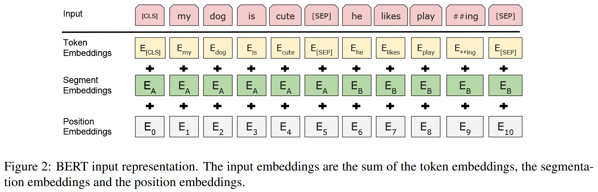

论文笔记 - BERT: Pre-training of Deep Bidirectional Transformers for Language Understanding
1. Information
Title: BERT: Pre-training of Deep Bidirectional Transformers for Language Understanding Link: BERT Paper Source: The North American Chapter of the Association for Computational Linguistics (NAACL) Date: 2019
2. Summary
本文提出了 BERT（Bidirectional Encoder Representations from Transformers），一种用于语言理解的深度双向变换器预训练方法。BERT 的创新之处在于其使用了双向上下文，与之前的单向上下文模型（如 GPT）不同。该预训练模型可以通过最小的任务特定架构进行微调，从而在多个 NLP 任务中实现了最先进的性能，如问答和语言推理。
3. Background
在 BERT 之前，许多 NLP 模型依赖单向变换器（如 GPT）或顺序模型（如 LSTM）。这些模型只能从左到右或从右到左处理文本，限制了它们捕捉丰富的双向上下文的能力。BERT 通过使用变换器架构并以双向方式进行训练，克服了这一限制，使得模型能够理解句子中每个词的完整上下文，从而显著提升了 NLP 性能。
4. Research Objective
本文的目标是提出一种新的预训练方法，用于变换器模型，能够有效捕捉双向上下文。作者旨在提升现有 NLP 模型的表现，并创建一种更加灵活的通用模型，能够通过最小的改动在特定任务上进行微调。
5. Method
BERT 的创新方法主要体现在其预训练任务和模型架构两个方面。通过这两种方式，BERT 突破了传统的 NLP 模型，在多个下游任务上取得了最先进的效果。以下详细介绍了 BERT 的架构、预训练任务和微调方法。
5.1 BERT 模型架构
BERT 的架构基于 Transformer，尤其是 Transformer 的编码器部分。Transformer 架构由Google 在《Attention Is All You Need》论文中提出，具有很强的并行计算能力和建模长期依赖关系的能力，尤其适用于 NLP 任务。BERT 仅使用了 Transformer 中的编码器部分，并进行了双向训练。BERT 的核心特点是双向训练，它通过使用 Transformer 的自注意力机制来同时考虑上下文中的前后信息。
5.1.1 Transformer编码器
- 自注意力机制（Self-Attention）：自注意力机制计算输入序列中每个词对其他词的注意力权重。每个词的表示都基于它与所有其他词的关系。
- 多头注意力（Multi-Head Attention）：将自注意力机制扩展为多个“头”，每个头学习不同的子空间的注意力表示。所有头的结果被拼接起来并通过线性变换得到最终表示。
- 前馈网络（Feed-Forward Networks）：每个 Transformer 层还包括一个前馈神经网络，负责对每个位置的表示进行独立的非线性变换。
BERT 采用了多层 Transformer 编码器堆叠，每一层都包括自注意力机制和前馈网络，最终通过这些层来生成上下文相关的词表示。
5.1.2 BERT的嵌入（Embeddings）
在 BERT 模型中，输入的每个单词或子词（token）都需要通过一定的嵌入（embedding）映射到一个高维空间，这些嵌入提供了对词语的丰富表示。BERT的输入嵌入由三部分组成：Token Embeddings（词嵌入）、Segment Embeddings（段落嵌入）和 Position Embeddings（位置嵌入）。这三种嵌入结合起来，帮助模型理解词汇、句子结构以及词语的顺序信息。

Token Embeddings（词嵌入）
Token Embeddings 是 BERT 模型中最基本的输入嵌入，主要是将每个输入的 token（例如词或子词）映射到一个固定的向量空间。BERT 的 token 嵌入使用了词表（vocabulary）中的每个 token 对应的一个嵌入向量。在 BERT 中，token 通常使用 WordPiece 分词法来切分，这意味着每个词或词组会被进一步拆分为子词单元，因此每个输入的 token（子词）都会有对应的嵌入向量,通常是通过查表的方式获取。
Segment Embeddings（段落嵌入）
BERT 能够处理成对输入的任务，例如问答或句子对分类任务。在这些任务中，输入有两个部分，BERT 需要区分这两个部分。为此，BERT 引入了 Segment Embeddings，它为每个 token 分配一个标识符，指示它属于第一个句子（Segment A）还是第二个句子（Segment B）,Segment Embeddings 不参与模型训练，是固定的值。
- 对于第一个句子中的每个 token，它的 Segment Embedding 值为 0。
- 对于第二个句子中的每个 token，它的 Segment Embedding 值为 1。
Position Embeddings（位置嵌入）
BERT 的 Transformer 架构本身并不具备处理词序信息的能力（不像 RNN 或 LSTM 那样顺序处理输入），因此需要引入位置嵌入来显式地编码每个词在序列中的位置信息。Position Embeddings 为每个 token 提供一个表示它在输入序列中位置的向量。
BERT 使用了可学习的位置编码（不像 Transformer 的相对位置编码）。每个 token 的位置都对应着一个唯一的嵌入向量，并且位置嵌入是与 token 嵌入、segment 嵌入一起相加的。
5.2 BERT的预训练任务
BERT 的预训练任务非常关键，决定了模型如何学习语言的上下文信息。BERT 的预训练任务包含两个主要部分：掩蔽语言建模（Masked Language Modeling，MLM）和下一句预测（Next Sentence Prediction，NSP）。
5.2.1 掩蔽语言建模 (MLM)
掩蔽语言建模是 BERT 的一项核心创新，它允许模型在训练过程中通过学习上下文来预测被掩蔽的词。与传统的语言建模方法（如 GPT）不同，BERT 并非仅从左到右或从右到左进行语言建模，而是通过掩蔽掉输入中的一些词并预测这些词来进行训练。
掩蔽过程：BERT 随机选择输入中的 15% 的词进行掩蔽，并要求模型根据上下文预测这些被掩蔽的词。被选择的 15% 词中 80% 的情况下，掩蔽的词被替换为“[MASK]”，10% 的情况下，掩蔽的词保持不变，10% 的情况下，掩蔽的词被替换为一个随机的词。
训练目标：BERT 的目标是最大化每个被掩蔽单词的预测概率。具体来说，给定输入文本 \(X = (x_1, x_2, ..., x_n)\)，BERT 会掩蔽其中的某些词，并要求模型预测这些词的值： \[ \hat{x}_i=\operatorname{BERT}\left(\tilde{X}_{-i}\right) \] 其中，\(\tilde{X}_{-i}\) 表示去除第 \(i\) 个词后的文本，\(\hat{x}_i\) 是模型对第 \(i\) 个词的预测。
掩蔽语言建模的主要目标是让模型能够在上下文中获取对每个词的全局理解，从而增强语义理解能力。
5.2.2 下一句预测 (NSP)
除了掩蔽语言建模，BERT 还使用了下一句预测任务，这一任务用于捕捉句子之间的关系。NSP 任务帮助模型理解句子对之间的语义关联，尤其是在理解长文档时。
任务描述：NSP 任务的目标是判断给定的一对句子 \(S_1\) 和 \(S_2\) 是否在原始文档中是连续的，即判断 \(S_2\) 是否是 \(S_1\) 的后续句子。如果 \(S_2\) 是 \(S_1\) 的后续句子，则标签为 1；否则为 0。
模型输入：将一对句子 \((S_1, S_2)\) 拼接在一起，并通过 BERT 进行处理。然后，输出一个二分类的标签，表示第二个句子是否是第一个句子的后续句子。
换句话说，给定一对句子 \(S_1\) 和 \(S_2\)，模型的目标是计算： \[ P\left(\operatorname{IsNext} \mid S_1, S_2\right)=\operatorname{sigmoid}\left(W^T h_2+b\right) \] 其中，\(h_2\) 是第二个句子 \(S_2\) 在 BERT 模型中的表示，\(W\) 和 \(b\) 是训练的权重和偏置，sigmoid 函数用于输出一个概率值，表示 \(S_2\) 是否是 \(S_1\) 的后续句子。
NSP 任务对于句子级别的推理（例如，问答任务中的句子对匹配、文本蕴涵等任务）特别重要。
5.3 BERT的微调 (Fine-tuning)
BERT 的一个重要特点是其强大的微调能力。BERT 的预训练模型可以通过微调来适应特定的 NLP 任务。在微调时，BERT 只需要少量的任务特定架构修改即可，因此能够在多种任务上展现出强大的性能。
微调过程：微调过程非常简单，通常只需在 BERT 的顶部添加一个简单的输出层（例如分类层），然后根据具体任务进行训练。这使得 BERT 能够轻松适应各种任务，如文本分类、命名实体识别（NER）、问答、情感分析等。
任务特定的输出层：不同任务需要不同的输出层。例如，对于分类任务，BERT 的输出层通常是一个 softmax 分类器；对于序列标注任务（如命名实体识别），输出层可能是一个标签的序列。
微调公式：微调过程中，BERT 的参数和输出层的参数都会共同更新。假设目标任务的损失函数为 \(\mathcal{L}_{\text {task }}\)，则微调时的目标是最小化该任务的损失： \[ \mathcal{L}_{\text {total }}=\mathcal{L}_{\text {task }} \] 对于不同的任务，损失函数可以是交叉熵损失、均方误差损失等。
6. Conclusion
BERT 通过提出一种新的双向变换器预训练方法，在多个 NLP 任务中设立了新的基准。它的通用性使其能够通过微调适应不同的任务，从而证明了双向预训练在语言理解中的强大能力。BERT 的成功也展示了 NLP 中迁移学习的潜力。